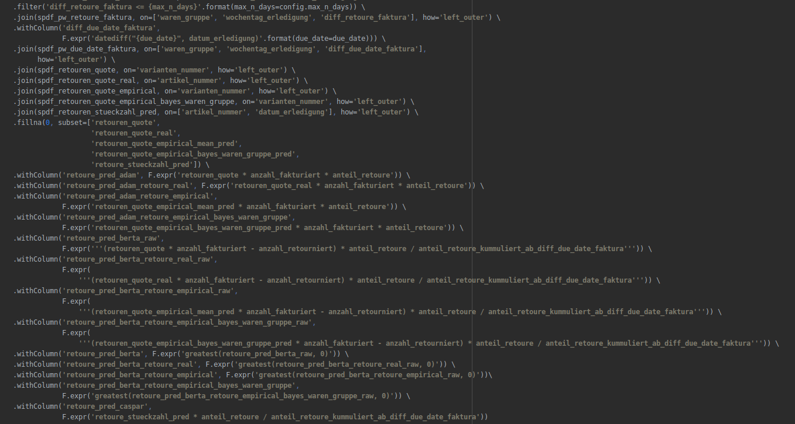

<!doctype html>
<html xmlns="http://www.w3.org/1999/html">
<head>
    <meta charset="utf-8">
    <meta name="viewport" content="width=device-width, initial-scale=1.0, maximum-scale=1.0, user-scalable=no">

    <title>Spark</title>

    <link rel="stylesheet" href="../reveal/css/reveal.css">
    <link rel="stylesheet" href="../reveal/css/theme/blood.css">

    <!-- Theme used for syntax highlighting of code -->
    <link rel="stylesheet" href="../reveal/lib/css/zenburn.css">

    <!-- Printing and PDF exports -->
    <script>
			var link = document.createElement( 'link' );
			link.rel = 'stylesheet';
			link.type = 'text/css';
			link.href = window.location.search.match( /print-pdf/gi ) ? '../reveal/css/print/pdf.css' : '../reveal/css/print/paper.css';
			document.getElementsByTagName( 'head' )[0].appendChild( link );


    </script>
</head>
<body>
<div class="reveal">
    <div class="slides">

        <section data-markdown data-separator="^\n---\n$" data-separator-vertical="^\n--\n$">
            <script type="text/template">
                ### Make your Spark code more readable

                Based on [this](https://medium.com/@mrpowers/chaining-custom-dataframe-transformations-in-spark-a39e315f903c)  Blog Post by [Matthew Power](https://medium.com/@mrpowers)

                and the advice of Markus Rother / Qudosoft

                ---

                #### The Problem
                

                ---

                #### We want code that is

                * readable
                * modular
                * testable

                ---

                #### <font color="yellow"> Solution: </font> write functions


                <pre><code>package object myfunctions {


  def f1(df: DataFrame): DataFrame = ???

  def f2(df: DataFrame, param: String): DataFrame = ???

  ...

}
</code></pre>

                * Modules in scala via package object
                * Testable

                ---

                ###### This yields
                <pre><code>import myfunctions._

                val val_1 = f1(df)
                val val_2 = f2(val_1, param)
                ...
                val val_n = fn(val_n-1)
                </code></pre>
                or
                <pre><code>import myfunctions._

                fn(...f2(f1(df), param))
                </code></pre>

                * In practice a combination of both
                * Incoherent treatment of variables and parameters
                * Not very modular or readable


                ---

                #### Hear your masters voice
                1. Write down what you want to see
<pre><code>df.f1
     .f2(param)
     ....
     .fn
</code></pre>
                    * feels like spark
                    * modular, more readable

                2. Implement

                ---

                #### Implementation 1:  via implicit class

                <pre><code>  package object myfunctions {

                    implicit class DataFrameImplicits(df: DataFrame) {

      def add_column = {df.withColumn("foo", lit("bar")}

      def f1(): DataFrame = ???

      def f1(param: String): DataFrame = ???

      ....
   }
  }
                </code></pre>

                ---

                #### Some critique
                * This is also called "Monkey Patching"


                <p><font color="yellow">_Changing base classes is known as monkey patching and is a delightful feature
                    of
                    Ruby but can be perilous in untutored hands._ — Sandi Metz</font></p>

                * Need to be familiar / be able to copy implicit class

                ---

                #### Implementation 2: via Sparks transform()
                <pre><code>
                    def transform[U](t: Dataset[T] => Dataset[U]): Dataset[U]

                </code></pre>

                * Swallows a function
                * $f: df \rightarrow df$

                <font color="yellow">**But what about function parameters?**</font>
                - $\rightarrow$ Include parameters via <font color="yellow">**currying!**</font>
                - In python this is also partial function
                - Super easy in scala!

                ---

                #### Small adaption in code

                <pre><code>package object myfunctions {

  def f1(df: DataFrame): DataFrame = ???

  def f2(param: String)(df: DataFrame): DataFrame = ???

  ...

}
</code></pre>

                mind the gap
                <pre><code style="text-decoration:line-through">def f2(df: DataFrame, param: String): DataFrame = ???</code></pre>
                <font color="yellow">$\rightarrow$ just set brackets appropriately</font>

                ---

                #### Result with transform()
                <pre><code>df.transform(f1)
  .transform(f2(param))
  ....
  .transform(fn)
</code></pre>
                vs with implicit classes
                <pre><code>df.f1
  .f2(param)
  ....
  .fn
</code></pre>
                * Both is nice (testable, readable, modular)
                * transform is spark native


                ---

                #### Hear the masters voice (example)
                <pre><code>readCSV(READ_OPTIONS)
  .transform(expand_fields)
  .transform(add_article_number)
  .transform(add_filename(file))
  .transform(add_timestamps(file))
  .write_parquet(table_name)
</code></pre>
                * Combination of both
                * write_parquet via implicit class as it does not spit back a DataFrame Object
                * <font color="yellow">Canonical extract-read-transform (ETL) Pattern</font>

                ---

                #### Summary
                * Improve the quality of your code
                    * <font color="yellow">transform()</font>
                    * implicit class
                *  <font color="yellow">Currying</font> is nice and easy in scala
                    * Disentangle function parameters from variables
                    * Unified usage of functions
                * Works in Python too (callable classes)!


            </script>
        </section>


    </div>
</div>

<script src="../reveal/lib/js/head.min.js"></script>
<script src="../reveal/js/reveal.js"></script>

<script>
			// More info https://github.com/hakimel/reveal.js#configuration
			Reveal.initialize({
				history: true,

				math: {
		            mathjax: 'https://cdn.mathjax.org/mathjax/latest/MathJax.js',
		            config: 'TeX-AMS_HTML-full'  // See http://docs.mathjax.org/en/latest/config-files.html
	            },

				// More info https://github.com/hakimel/reveal.js#dependencies
				dependencies: [
					{ src: '../reveal/plugin/markdown/marked.js' },
					{ src: '../reveal/plugin/markdown/markdown.js' },
					{ src: '../reveal/plugin/notes/notes.js', async: true },
					{ src: '../reveal/plugin/highlight/highlight.js', async: true, callback: function() { hljs.initHighlightingOnLoad(); } },
					{ src: '../reveal/plugin/math/math.js', async: true }
				]
			});


</script>
</body>
</html>
